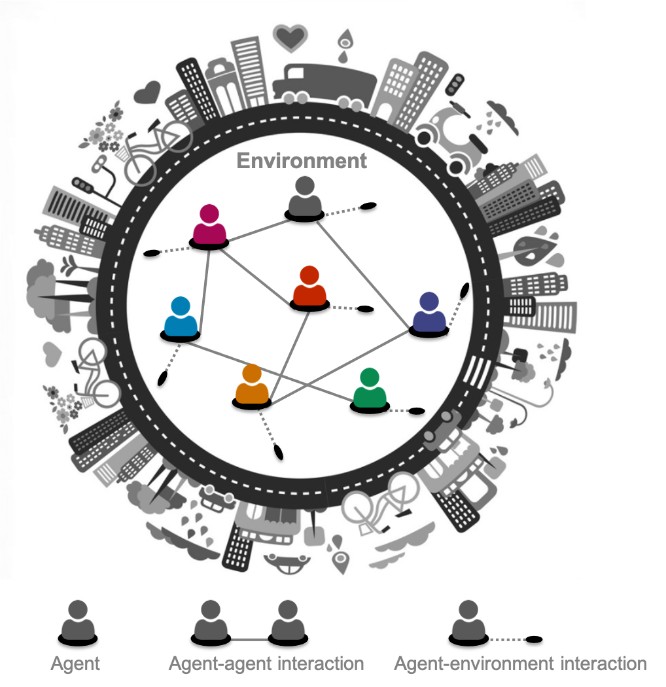
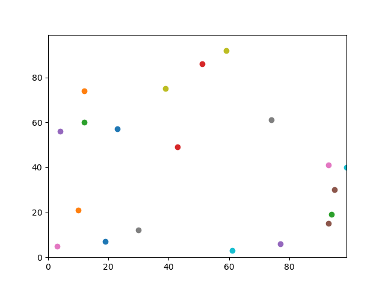
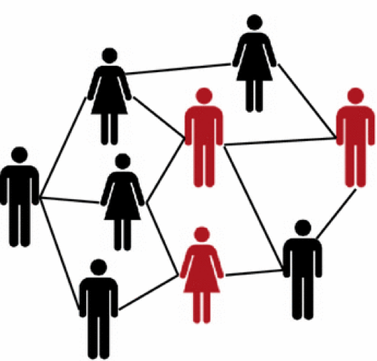
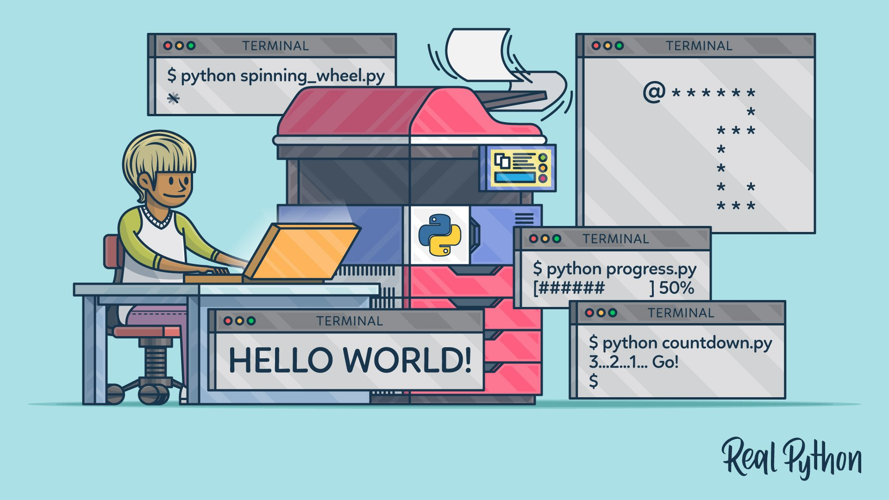
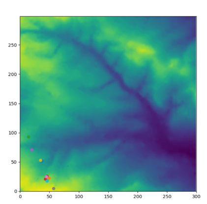

Welcome to the Agent Based Model factory, this page will be exploring each step to take to produce an agent based model. This model was produced for a University course exploring geography programming and spatial Analyse. In addition, the following steps below will be attached to a GitHub page, exemplifying the codes for each practical. Furthermore, the models were created using the software ‘Python’. Python is high level programming language used to produce software’s, websites also, implement data analysis. Furthermore, the following practical’s below illustrate the steps which led to the final Agent Based Model. To find each code for the practical, press 'view more’. Thank you
Maryam Ali

Agent Based Model (ABM) are class of numerical and computational models which consist of individual things (agents) to encode and examine their mass behaviour and exploring their interactions and environment. The model uses statistical and mathematical techniques to explore and understand their emergent behaviour.
The use of Code shrinking is particularly significant when generating a model. This is because it detects the impracticable parts of the code and produces a neat function. To implement this container is introduced to this practical to help better store the agent coordinates. In addition, containers are an important feature of data structure in Python. There are several container types including list and tuple. This will be explored further in this section.
To effectively code shrink, control flow statements are utilised. Control flow statements are the directive in which program codes perform. This will be illustrated in this section as control flow statements will be utilised to break up the flow of execution by looping and branching. This is significant method as it removes all repeats to enable the code to sucessfully execute.

Building tool practical introduces the use of functions. Functions are a block of codes which run when ordered. In addition, Python has several built-in –functions such as ‘print’. Additionally, this sections aims to produce and build some functions which can be placed into the system.

Agents practical will be adopting classes and object oriented programming to give the agents attributes and behaviours. Classes are a prototype which form objects. Additionally, this practical consists of
converting the code into an object-oriented version along with agent class.

The I/O module is utilised in python to manage and open files. Additionally, built-in functions such as print (), import and input () help to perform I/O tasks in python. This practical will consist of importing a txt file , to use as an environment for the agents . This will help to explore how the agents interact and engage with their environment
Communication, this practical aims to explore how the agents communicate. This will be implemented by constructing another behavioural method, through a new function called share_with_neighbourhood and new variable ‘neighbourhood’. Additionally, this function will help the agents to explore the environment, search for neighbours and share resources.
To animate the model, matplotlib will be adopted. Matplotlib will help visualise how the agents interact with their environment. To implement this, we will download and open animatedmodels also, import matplotlib (fig) into the system. This will create an animation showing the agents moving around the environment.
Graphical User Interface (GUI) helps to communicate with the computer application and system without typing the instructions. GUI will be utilised to finish off the model, the following matplotlib were imported, matplotlib.use(‘TKagg’). Also, the backend will be changed to ‘tkinter’. Furthermore, this practical will also web scrap. Web scrapping is a program or algorithm which imports a data from the web. Additionally, web scrap will be implemented to initialise the model.

The finale Model for Agent Based Model is complete. The following model is effectively able to interact agents with their neighbours and environment. Additionally, data visualisation from the animations practical also enables this model to move agents around their environment.
Furthermore, the finale model can also randomise the order of agent’s behaviours and is initialised with data from the web. To view the completed model, ‘view more’.